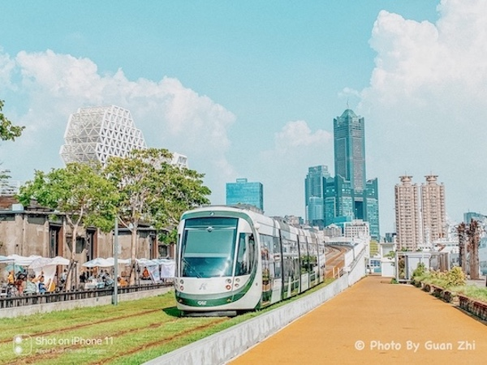

攝影照片
攝影照片

用相片紀錄下美好回憶！以下都是我自己拍的照片呦～
那麼我們就好好來欣賞這些美麗的照片吧！
新穎現代的輕軌列車與高雄知名地標八五大樓
高雄輕軌第一次是在2015年通車，
高雄也是全台灣第一條環狀輕軌，
這張照片的拍攝地點是在
駁二藝術特區，
在早期這邊很荒涼，近年來經過政府規劃，
陸續打造成國際型的觀光景點，吸引國內外的遊客，
後方背景也是逐漸發展的亞洲新灣區，
同時我們也看到了高雄的最大建築--85大樓！
高雄市立圖書總館-倒影

同樣位於高雄亞洲新灣區的
高雄市立圖書總館，
是許多學生下課後學後自修讀書的好地方，
館內不但擁有高品質的讀書環境，
也有許多藏書供讀者借閱，
透過大量玻璃打造的方正建築物，
在白天或是黑夜都很耀眼，
到了晚上還會打上七彩繽紛的氣氛燈，
讓整體建築更有質感，
當天剛好讀完書，經過旁邊的停車場，
於是又看到地上的水坑，
拿起手機，放低機位，
一張美麗的倒影照片就這樣完成嘍～
日月潭-上天送給邵族人的禮物
這張要介紹的就是聞名國內外的
日月潭，
相信這一定是許多人旅遊會參考的地方呀！
它的面積也僅次於曾文水庫，排名老二的它，
可以說是台灣前十大的旅遊景點了，
我們可以看到眾多飯店環著湖，
搭配腳踏車或是渡輪，
可以在這很放鬆的度假，享受美好人生
如此美麗的日月潭風光，
即使我已經去過很多次了，仍然很喜歡那邊！
因為日月潭的美景真的美不勝收！太美了！